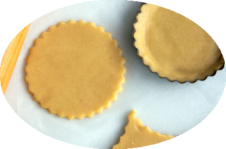

Pâte sablée

Ingrédients
- 250 g de farine
- 100 g de beurre
- 30 g d'eau froide
- 50 g de sucre
- 1 pincée de sel
Recette
- Dans le bol du mettre la farine;
- Couper le beurre mou en morceaux.
- Installer le batteur K vitesse 1 pendant 1 mn. On obtient une préparation sableuse. C'est le sablage.
- Rajouter le sucre, le jaune d’œuf, la pincée de sel et mélangez vitesse 2 pendant 1 mn ;
- Ajoutez l'eau et continuez vitesse 1 de façon à former une boule de pâte qui se détache des parois du bol, si besoin rajouter un peu d'eau;
- Rouler la pâte en boule et la laisser reposer au réfrigérateur.
|